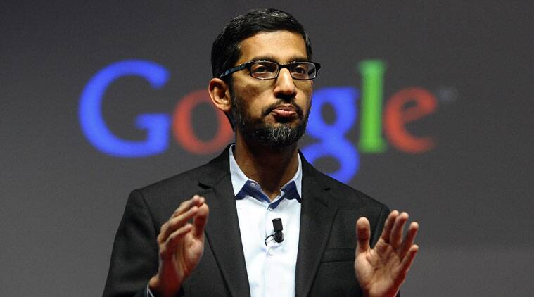

Sundar Pichai, the CEO of Google, has achieved numerous milestones throughout his career. Pichai has played a pivotal role in the development of several of Google's major products,
including Google Chrome and Android. He has also been a champion of artificial intelligence and has overseen the development of numerous AI-powered products at Google.
Pichai has been a vocal supporter of education and has launched several initiatives to support STEM education and computer science education in particular.

"As a leader, it's important to not just see your own success, but focus on the success of others."
-Sundar Pichai
A Brief Timeline of Events in Sundar Pichai's Life:
1972 - Born on July 12th in Chennai, India
1995 - Earned a Master of Science degree in Material Sciences and Engineering from Stanford University.
2002 - Earns an MBA from the Wharton School of the University of Pennsylvania
2004 - Joins Google as a product manager
2008 - Becomes the Vice president of Product Development at Google, overseeing the development of products such as Chrome and Chrome OS
2011 - Takes on additional responsibilities and becomes Senior Vice President of Chrome and Apps at Google
2013 - Becomes the head of Android, the mobile operating system developed by Google
2015 - Named CEO of Google as part of the comany's restructing, which created a new parent company called Alphabet Inc
2017 - Joins the board of directors of Alphabet Inc.
2018 - Started a fortnightly Marathi paper Bahiskrit Bharat Dr Ambedkar himself was the editor.
2019 - Named CEO of Alphabet Inc., succeeding Larry Page
2020 - Announces a $10 billion investment in India over the next five to seven years as part of Google's "Google for India" initiative
2021 - Announces plans for Google to invest $7 billion in data centers and offices across the United Stattes